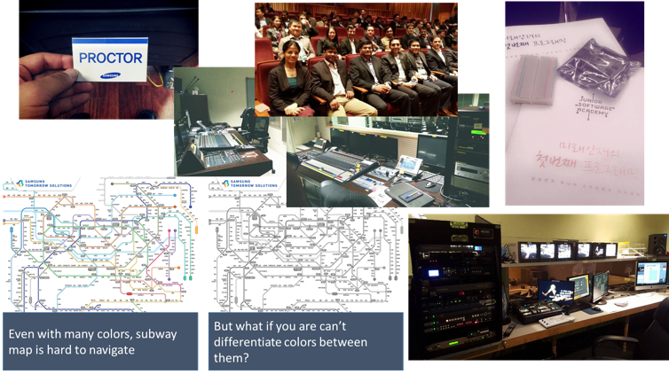

UX Software Engineer
I earned my first master's degree in Computer Science from University of Utah. Then, I worked as a Software Engineer at Samsung Electronics. After many collaboration projects with great UX teams at Samsung, I found my passion for UX. Recently I finished the master's degree in Human Factors & Ergonomics at San José State University. Now I would like to bridge the gap between Engineers and UX designers.

Passion Project
I just love to help people as much as I can with all my heart. At Samsung, there were many opportunities to be part of giving back to the community. For instance, I tutored many students from Jr. High to College, mentored many new employees regardless of their ethnicity, gave free consulting to a start-up company.
In year 2016-2017, As the President of the UXA, I curated several workshop and speaker panels at San José State University.
Currenly, I'm the webmaster for the UX day of HFES 2017 international annual conference, and the member of the UX planning committee for the Bay Area K-group. And every weekend, as a media editor, I create a short montage for weekly announcement at New Vision Church, CA.